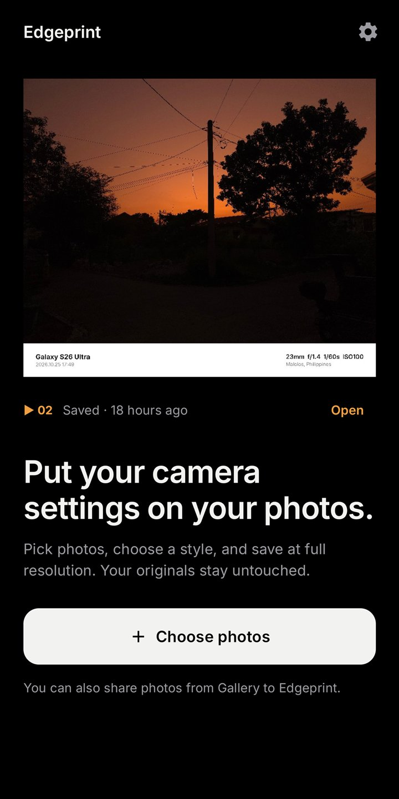
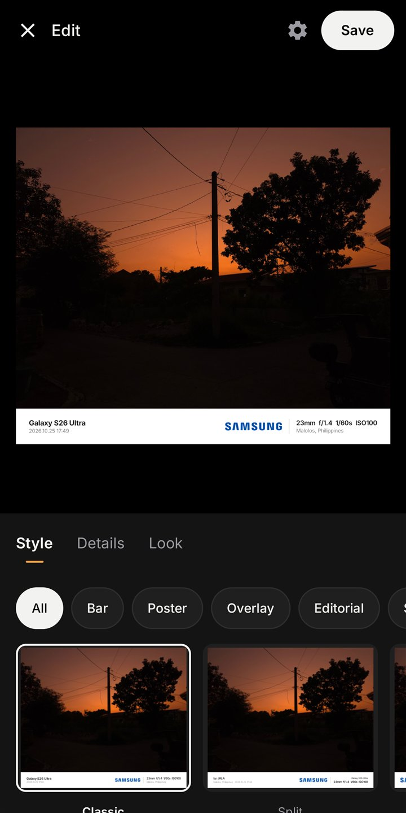
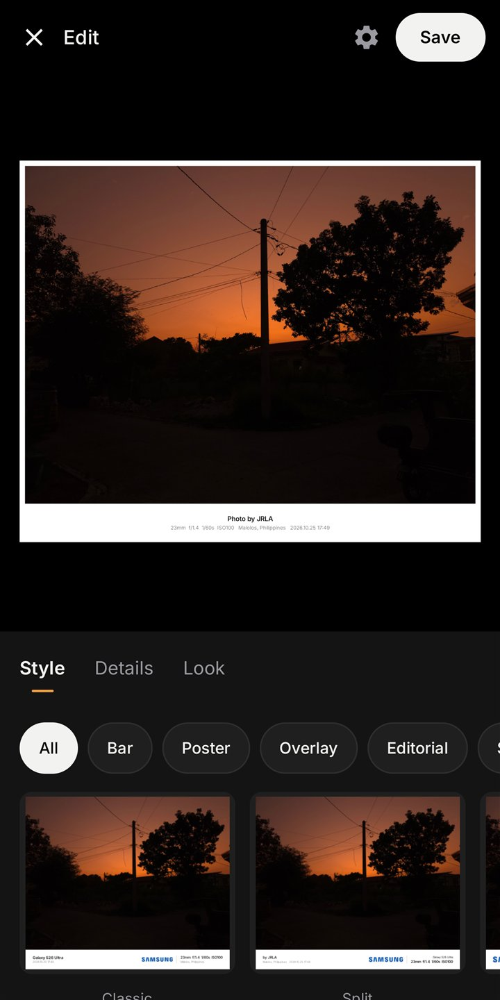
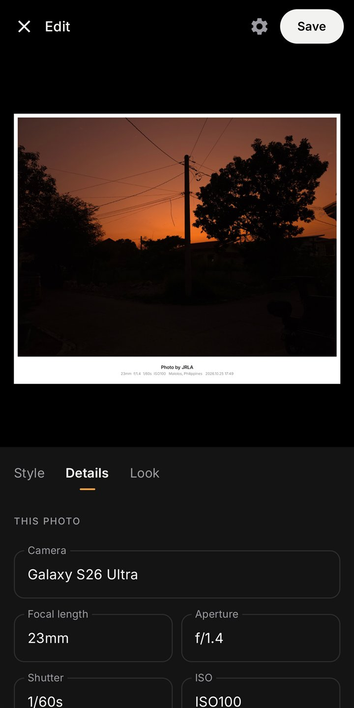
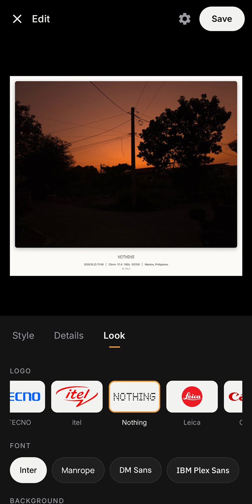
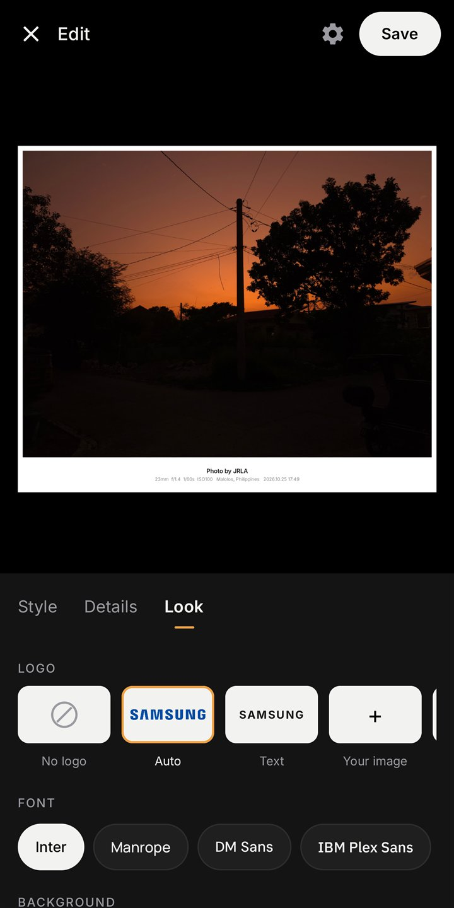
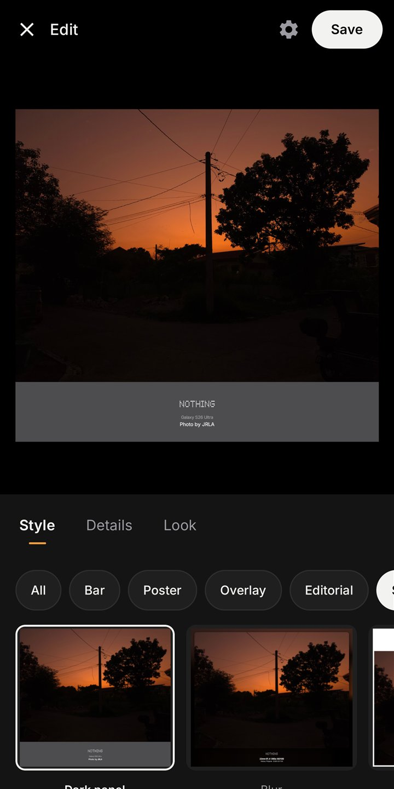
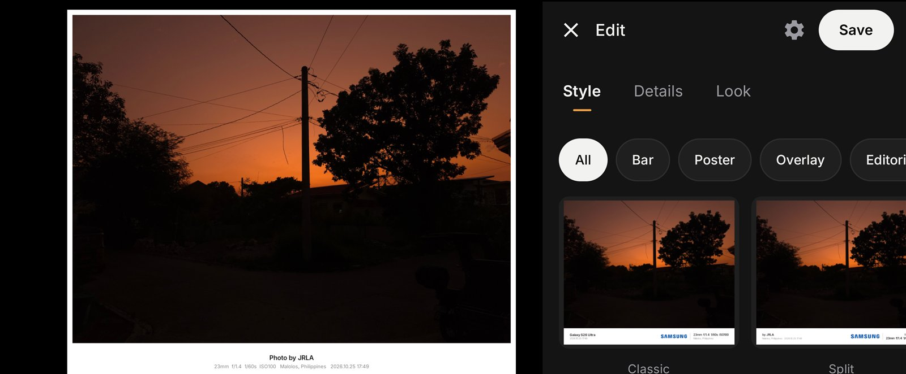
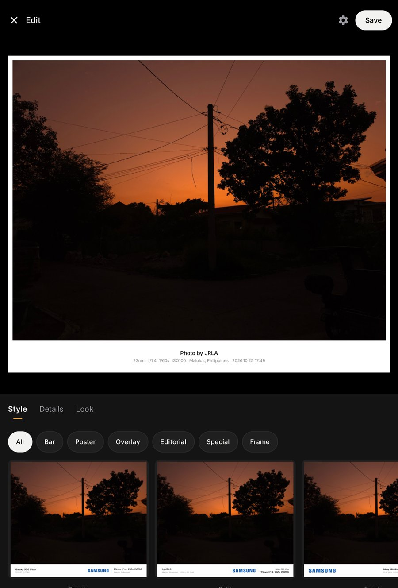
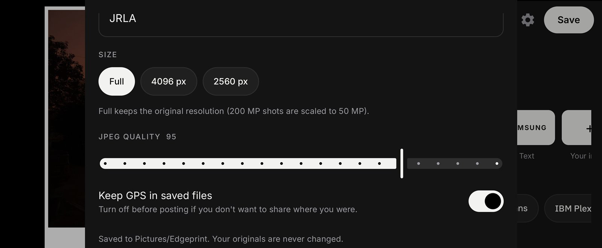

Put your camera settings on your photos.
An Android app that frames each photo with the camera, lens and exposure it was shot with, then saves it at full resolution. It works offline, and your originals stay untouched.


Edgeprint reads the details already stored in your photo, so most photos are ready the moment they open.
STEP 1
Choose up to 50 at once, or share them straight from Gallery.

STEP 2
Every thumbnail is a live preview of your own photo.

STEP 3
Edit any value, then save a new full-resolution JPEG.
From a quiet info bar to a magazine layout, each style is drawn at your photo's full resolution.
Classic, Split, Focal, Logo first
Border, Instant, Film 35, Film 120, Mat
Gallery, Line, Shadow, Card, Chips
Strip, Caption, Center, Signature, Corners, Inset
Side panel, Magazine
Dark panel, Blur, Header



The camera brand's logo is picked from the photo automatically and switches between black and white to suit the background.
52
Camera and phone brand logos, from Leica to Nothing, or upload your own.
10
Bundled fonts, including Inter, Space Grotesk and Playfair Display.
5
Aspect ratios: Original, 1:1, 4:5, 9:16 and 16:9.
Every
detail is editable: camera, lens settings, date, place, your name, a title or a quote.
In landscape the tools move beside the photo, so the photo keeps the full height. Tablets get a roomier panel, and both layouts keep clear of the camera cutout and stay usable with large text.

Phone, landscape: photo on the left, tools on the right.

Tablet, portrait.
Edgeprint doesn't request internet access, so it can't upload your photos. There are no accounts, ads or tracking.
Only to read GPS from the original file. Picking works without it.
Lets the app see a photo's GPS so it can show the place.
Nothing leaves your phone through the app.

Turn off “Keep GPS in saved files” before posting to keep where you were private.
| Platform | Android 10 and newer, targets Android 16 |
| Built with | Kotlin, Jetpack Compose, Material 3 |
| Export | JPEG at full resolution (up to 50 MP), 4096 px or 2560 px, adjustable quality |
| Metadata | Camera details copied to the saved file; GPS optional |
| Batch | Up to 50 photos, saved in one go |
| Size | About 7 MB, works fully offline |
Design and development
John Russel L. Angulo
Frontend developer and UI/UX designer, Philippines.